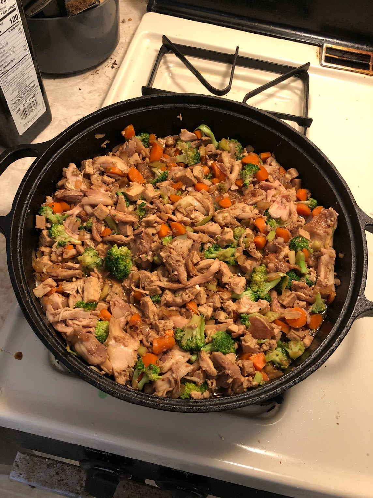

Teriyaki Stir Fry
Back to Main

Description
Home made teriyaki sauce with vegetables and meat
Ingrediants
- Onion 1/3 cup
- Cabbage 1/3 cup
- Carrot 1/3 cup
- Broccoli 1/3 cup
- Soy sauce 1/2 cup
- Brown Sugar 1/4 cup
- Ginger 1 Tbsp
- Garlic 2 cloves
- Salt and Pepper to taste
- Oil 2 Tbsp
- Rice 1 cup
- Protein Chicken or Tofu
Steps
- Cook protein and fry until brown on both sides, add vegetables if there is space if not remove protein and add back after veggies
- Add cut onion, cabbage, carrots, and broccoli
- Add soy sauce, brown sugar, and ginger. Wait until the sauce reduces and thickens and add to everything